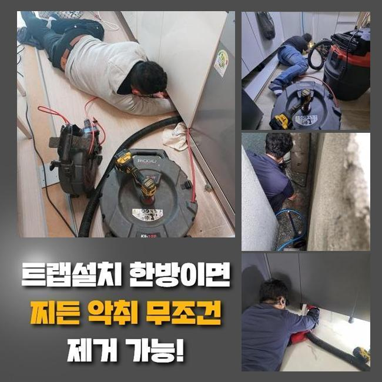
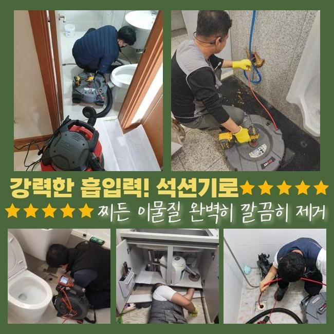
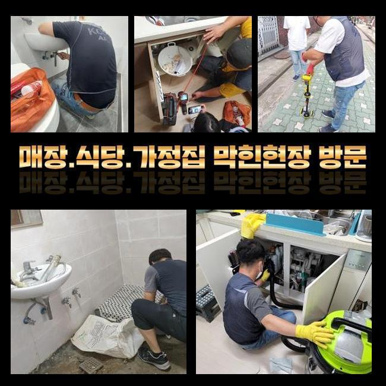
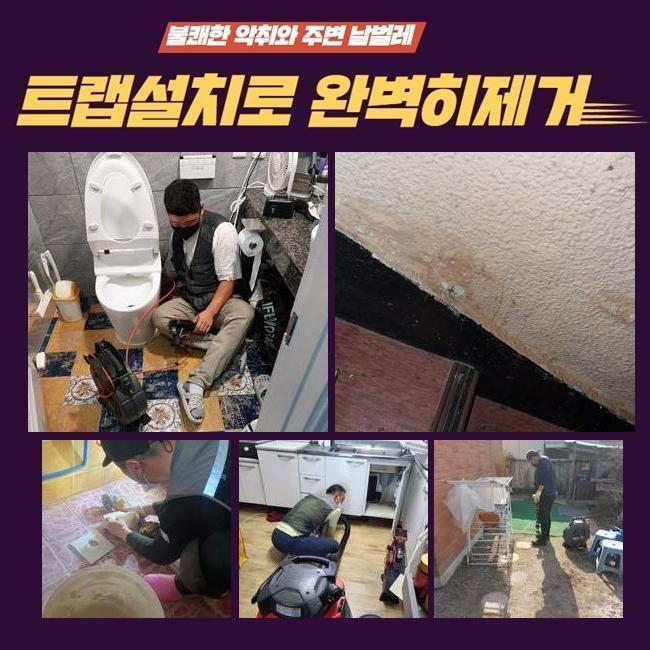
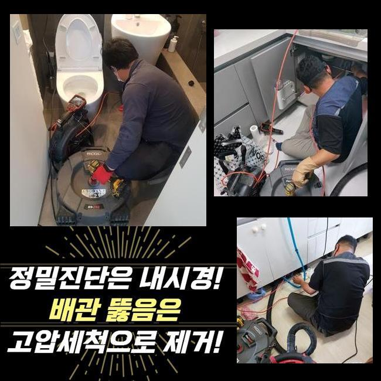

🏠 동두천 송내동 세탁실역류 소요동 하수구뚫는곳 누수탐지공사
동두천 하수구막힘 전문 시공 후기

📋 작업 개요
- 위치: 동두천
- 서비스 유형: 하수구막힘, 배관막힘, 누수수리, 역류해결, 뚫는업체, 배관청소, 설비공사, 악취차단
- 작업 일시: 2025. 4. 1. 23:43
- 업체명: 하수구수사대 (010-5615-2118)
🔍 문제 상황
동두천 송내동 세탁실역류 소요동 하수구뚫는곳 누수탐지공사
세탁기를 활용하다보면 배수가 힘들어지는 케이스들이 벌어집니다
빨래를 한 물이 나가면서 아주 소량의 이물질들이 모여들다보면 배수되는 파이프를 봉쇄해서 그런 것인데요
배수관이 제대로 작동하지 못하면 제대로 수돗물이 폐기되지 못할 뿐만 아니고 세탁수에서도 역류가 되기도 하고 참을 수 없는 악취와 습기가 자욱해집니다
세탁기가 골칫거리가 되는 일을 목격하는 순간 봉인된 곳을 빨리 관통시켜서 해결해야겠다는 생각을 품을 수 있지만 사실 차단된 영역은 눈에는 잘 들어오지 않는 보다 깊은 위치에 자리할 수 있으니 자가 해결은 분명히 제약이 있습니다
오늘 소개할 현장은 세탁물이 빠져야 할 배수구에서 물줄기가 치솟는 증세가 순차적으로 정체를 드러냈습니다
배수구 고장으로 인해서 물길이 완전하게 제자리에서 맴돌고 있었고 세탁을 한 물에서도 굉장한 악취가 나서 고충을 만들었던 것이었어요
움직임을 재촉해서 고객님이 계신 곳으로 가서 세탁기 사용이 힘들어진 이유를 알아보기 위하여 내시경 장치들을 직접 동원해서 깊숙한 수로를 심도깊게 관측했습니다
내시경은 기술력을 바탕으로 내측까지 세부상황을 선명하게 제시를 하기 때문에 얼마만큼의 이물질이 내부에 집중되어 있는지 여부를 정확히 쉽게 볼 수 있습니다
내부 상황을 확인을 이어간 결과 관로에는 각종 오염원들이 가득 차올라 있어서 빨아당기는 작업으로는 물길이 회복되기가 어려운 상황에 놓여있었어요

🔎 원인 분석
💡 전문가 진단: 정밀 진단 장비를 사용하여 슬러지의 고착 여부를 판명하고 타격/세척 작업을 실시했습니다.
오염이 많이 된 상황이면 동반한 기기들을 두루 사용해야 사안을 유연하게 처리할 수 있어요
갈아내는 샤프트 장비를 사용하여 오물들을 치워버리기로 노선을 정했습니다
플렉스 샤프트란 기기는 기다란 기기의 헤드에 단단한 노커가 달려 있다보니 까마득한 깊이까지 다가가서 오물들을 진동을 통해 분해하는 절차를 거치게 됩니다
이러한 일들을 스케일링이라는 명칭을 붙이는데 오랫동안 누적되어 온 모발이나 세제 찌꺼기를 싹 사라지게 만드는 부분에 엄청난 효과를 자랑합니다
이 원리를 차용해서 세탁조 인근에서 출발해서 옥외 배관에 이르기까지 이어진 배관 전반을 두루 살펴보고서 샤프트를 돌려서 막힘을 유발한 원인부를 깨끗하게 정화했습니다
해당 작업을 수행하다보니 배수구의 곳곳에서 어마어마한 이물질들이 눈에 들어왔었습니다
이렇게 차단의 원인이 있다보니 하수구 곳곳에서 틈을 발견하지 못한 물이 흐름이 끊겨버린 겁니다
세탁기에서 흘러 나오는 모발이나 실오라기들이 장애요소가 된 것 같았습니다
결합되어 커진 덩어리들을 조각내면서 여전히 존재하는 자그마한 이물질들은 석션기를 적극 사용해주어 말게 처리를 해드렸어요
석션 장비를 소개드리자면 밑에 잔여하는 작은 세밀한 조각들을 말끔히 처리하는 데 탁월하게 수행해요
모든 프로세스에서 항시 석션을 옆에 두고 들어가야 할 시점에 석션으로 빨아당겨주면서 배관의 내측을 뚫어 흔적 조차 없도록 정리정돈합니다

🔧 작업 과정
옷과 함께 붙어 있었던 소소한 물건들이 물에 휩쓸려 내려가서 봉쇄되는 일도 많은데 오늘 처리한 곳에서도 자잘한 물건들이 속속들이 나오더라고요
부주의하게 넣은 것들이 배수구 장애의 메인 원인으로 전락하기도 합니다
본 내시경 장치를 통해 잔여 물질이 자리한 곳들을 숙지를 하고서 타격을 가하지 않게끔 오물만을 선별적으로 정리하는 단계를 흠 없이 마감 짓게 되었습니다
세탁기 쪽 배수구도 그렇지만 옥외 하수관으로 나가는 영역 마저도 카메라로 스캔을 해보았습니다
이상물질들이 가득하게 엉겨붙고 끼어있는 구간은 샤프트 및 석션기를 번갈아서 이용해서 완전히 더러움을 처단했습니다
특히 배관 장소에 위치할 수 켜켜이 쌓여서 단단해진 물질은 장기간 자리를 잡았을 것으로 예상이 갔기 때문에 빨아당기는 작업으로는 척결하는 게 곤란한 것이 분명했습니다
새까맣게 어둑한 깊이에 조금씩 더해졌을 물질들을 싸그리 없애려면 다수의 하수구 기기들과 갈고 닦아온 숙련자의 기술이 굉장히 중요합니다
배관용 촬영기인 내시경 그리고 샤프트 석션 장치를 같이 활용해서 효과 좋고 완성도 있게 배관 정돈을 계속 진행해준 성과로 흐름을 차단하는 장애물들을 속시원하게 걷어낼 수 있었습니다
청소를 다 끝내고는 배관의 나아진 상태를 소개하면서 현재 배관의 구조와 문제점에 대해서 가이드를 해드립니다
비전문가이신 고객님도 선명한 내시경을 통해 관로 안을 선명하게 보면서 전혀 감을 잡지도 못했던 원흉을 알게 되셨고 알아차릴 수 있었습니다
또한 하수관의 관리 방식에 관련한 방안에 대해서도 가르쳐 드렸습니다
또한 같이 연결된 배수구 커버와 연결 부속까지 둘러보며 갈아줄 때가 된 측면은 없는지를 봐드리고 요청이 들어오면 교환도 바로바로 동의하시면 실시해 드립니다
하수구 설비의 고장은 시간과 장소를 가리지 않고 나타나기도 하는데 욕조나 세탁기가 있는 곳처럼 물이 확 나가버리는 장소에 한해서는 주의를 기울여야 합니다
셀프 클리너로 스스로 도전하시다가 장치가 다치는 경우도 많이 일어나기 때문에 무모하게 시도하면 위험합니다
오늘 공개한 케이스는 세탁기 밑에 달린 하수구 막힘건을 작업을 통해 처리해 드렸으며 크고 작은 관로를 두루 조사한 뒤에 정화해드린 사례에요
하수구 설비의 고장은 신속하게 처리하지 않으면 누수가 생기는데 이를 위해서는 좋은 장비 라인업과 기술이 무엇보다 소중합니다


✅ 작업 완료
설비에 대해서 모르시던 고객분도 작업 후 더러웠던 하수구의 퀄리티가 나아졌다는 걸 알게 되셨습니다
곤란을 빚는 막힘이 더는 빚어지지 않게끔 마무리도 철저히 했습니다
집 안 하수도의 고장은 단순한 머무는 가구원분들 건강 이슈를 낳을 수 있습니다
많은 시간을 보내는 집 안을 쾌적하면서 항상 건강하게 유지하기 위해선 하수구가 딱 막혔을 때 전문진의 방문으로 흐름을 완전히 복구하는 것이 반드시 필요합니다
하수구에 대한 케어가 필요한 순간은 언제라도 찾아주시면 신속하게 달려가도록 하겠습니다



⚠️ 베란다 누수 및 방수 관리 방법
- ✅ 비가 많이 올 때 창틀 주변이나 아래층 천장에 얼룩이 생기는지 정기적으로 확인해 보세요.
- ✅ 우수관 주변 실리콘 마감이 들뜨거나 깨진 틈새가 있는지 손상 여부를 수시로 체크하세요.
- ✅ 베란다 바닥 타일의 줄눈(메지)이 소실되면 그 틈으로 물이 침투하여 누수가 유발됩니다.
- ✅ 누수 의심 증상 발견 시 방치하면 아래층 손실이 커지므로 즉시 전문가의 진단을 받으십시오.
💡 핵심 정리
- 확실한 장비 작업(내시경 점검 및 샤프트 스케일링)으로 원인을 뿌리 뽑습니다.
- 작업 후 1년 이내에 동일한 부위 재발 시 100% 무상 A/S 서비스를 보장합니다.
- 서울 · 경기 · 인천 전 지역에 24시간 언제든 긴급 출동할 수 있도록 항시 대기 중입니다.
❓ 자주 묻는 질문 (FAQ)
🚨 동두천 하수구막힘 문제로 고민이신가요?
정확한 원인 진단과 확실한 시공으로 재발 없는 해결을 약속드립니다.
24시간 긴급 출동 | 서울 · 경기 · 인천 전지역 | 1년 내 재발 시 무상 A/S